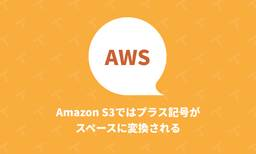

TechRacho
https://techracho.bpsinc.jp
TechRacho（テックラッチョ）は、BPSスタッフがおくるシステム開発＋αのアイデアマガジンです。Ruby on Railsネタ、EPUBの電子書籍ビューワに関連したAndroid/iOS開発ネタが多いです。社内の雰囲気がわかる記事もあるので興味をもってくださる方はぜひご覧ください。
フィード

Evil Martiansが贈る「古いRailsアプリを1日1時間✕12日でリフレッシュする方法」 33
33
TechRacho
概要 元サイトの許諾を得て翻訳・公開いたします。 英語記事: Railsmas on Mars: 12 Days of Mandatory Developer Joy and Challenge—Martian Chronicles, Evil Martians’ team blog 原文公開日: 2024/12/31 原著者: Svyatoslav Kryukov（バックエンドエンジニア）、Artur Petrov（バックエンドエンジニア）、Travis Turner （技術編集者） サイト: Evil Martians -- ニューヨークやロシアを中心に拠点を構えるRuby on Rails開発会社です。良質 […]The post Evil Martiansが贈る「古いRailsアプリを1日1時間✕12日でリフレッシュする方法」 first appeared on TechRacho.
7時間前

Amazon S3ではプラス記号がスペースに変換される 1
TechRacho
AWSのS3でREST APIエンドポイントを使う場合、ファイル名（キー）にプラス記号 + (U+002B)を含めてリクエストすると、スペース(U+0020)に変換されてしまいます。そして悲しいことに、この挙動はCloudFrontでS3オリジンを使った際にも適用されます。ただし、S3 Static Website Hostingを使った際にはこの挙動になりません。 具体例 バケットに以下のファイルがあるとします。バケット名は仮に example とします。 test+1.txt test 1.txt S3に直接アクセス https://example.s3.ap-northeast-1.amazonaws.co […]The post Amazon S3ではプラス記号がスペースに変換される first appeared on TechRacho.
2日前

Rails: データベース変更をリアルタイム＆低予算でユーザーにブロードキャストする（翻訳） 3
TechRacho
概要 元サイトの許諾を得て翻訳・公開いたします。 英語記事: Broadcasting real-time database changes on a budget | justin․searls․co 原文公開日: 2024/08/04 原著者: Justin Searls -- Test Doubleの共同創業者です 日本語タイトルは内容に即したものにしました。 Rails: データベース変更をリアルタイム＆低予算でユーザーにブロードキャストする（翻訳） 私がBeckyの筋トレビジネス用のアプリ（まだリリースしていません）を構築しているときには、アプリをサーバーサイドとクライアントサイドに分けずに動的なフロン […]The post Rails: データベース変更をリアルタイム＆低予算でユーザーにブロードキャストする（翻訳） first appeared on TechRacho.
5日前

Rails: Hotwire Nativeでネイティブモバイルアプリを作ろう: iOS編パート1（翻訳） 5
TechRacho
概要 原著者の許諾を得て翻訳・公開いたします。 英語記事: Hotwire Native iOS Part 1 | William Kennedy 原文公開日: 2025/01/31 原著者: William Kennedy 日本語タイトルは内容に即したものにしました。 従来Turbo NativeとStradaと呼ばれていたものは、現在はHotwire Nativeに統合されました。 参考: Hotwire Native: Hotwire Native is a web-first framework for building native mobile apps. Rails: Hotwire Nativeで […]The post Rails: Hotwire Nativeでネイティブモバイルアプリを作ろう: iOS編パート1（翻訳） first appeared on TechRacho.
6日前

Ruby 3.2.7がリリースされました 2
TechRacho
Ruby 3.2.7がリリースされました。内容はバグ修正です。 Ruby News ➜ Ruby 3.2.7 Released https://t.co/uG8ygRhHBu — RUBYLAND (@rubylandnews) February 4, 2025 リリース情報: Ruby 3.2.7 Released 詳しくはリリース情報をご覧ください。 参考 Ruby 3.2は、2025年3月いっぱいでnormal maintenanceが終了する予定です。 Ruby 3.1は、2025年3月いっぱいでEOLとなる予定です。 参考: Ruby ブランチごとのメンテナンス状況 Ruby ブランチごとの […]The post Ruby 3.2.7がリリースされました first appeared on TechRacho.
8日前

UIデザインで役立つ「不透明度」使いこなしガイド（翻訳）
TechRacho
概要 元サイトの許諾を得て翻訳・公開いたします。 英語記事: Woah, opacity! A full guide to this badass hero of efficient UI design—Martian Chronicles, Evil Martians’ team blog 原文公開日: 2024/10/29 原著者: Arthur Objartel（プロダクトデザイナー）、Roman Shamin（デザイン統括者）、Travis Turner （技術編集者） サイト: Evil Martians -- ニューヨークやロシアを中心に拠点を構えるRuby on Rails開発会社です。良質のブログ […]The post UIデザインで役立つ「不透明度」使いこなしガイド（翻訳） first appeared on TechRacho.
8日前
Google Workspaceでライセンスを割り当てないユーザを作成する
TechRacho
Google Workspaceを利用していると、「自社のドメインのGoogleアカウントを持っている ≒ 自社の社員」とみなすことが出来ます。これを利用し、ステージング環境へのアクセスを自社内に制限したいときに、ALBでGoogleアカウント認証するといった手段が取れます。 ※クラスメソッドさんのAmazon CognitoユーザープールLambdaトリガーでALB認証のメールアドレスを制限する の記事が大変有用です。 しかし、運用しているとそのうちに、臨時メンバーなどで「ステージング環境へのアクセス権は付与したいが、Gmail等の機能は不要で、Google Workspaceの月額費用を払うのももったいない」 […]The post Google Workspaceでライセンスを割り当てないユーザを作成する first appeared on TechRacho.
9日前
Rails: パーシャルでstrict `locals`マジックコメントを使うときの注意点（翻訳）
TechRacho
概要 原著者の許諾を得て翻訳・公開いたします。 英語記事: Binary Solo | Strict locals in Rails partials and their gotchas 原文公開日: 2024/09/11 原著者: Ayush Newatia 参考: §5.8 厳密なlocals -- Action View の概要 - Railsガイド 日本語タイトルは内容に即したものにしました。 Rails: パーシャルでstrict localsマジックコメントを使うときの注意点（翻訳） Railsのパーシャル（partial）は随分前から存在していますが、オブジェクト構造に支えられていない単なるERBス […]The post Rails: パーシャルでstrict `locals`マジックコメントを使うときの注意点（翻訳） first appeared on TechRacho.
12日前
週刊Railsウォッチ: Railsコンソールの便利技、ruby-refrigerator gemほか（20250130）
TechRacho
こんにちは、hachi8833です。RubyKaigi 2025のSuper Early Birdチケットが早くも完売です。 Register now for RubyKaigi 2025 https://t.co/ykaJmjMkbe #rubykaigi — RubyKaigi (@rubykaigi) January 28, 2025 早すぎん？？？ #rubykaigi pic.twitter.com/eNOLBKmbAF — 🌾yamamoto🌾 (@yamako_inaka) January 29, 2025 週刊Railsウォッチについて 各記事冒頭には🔗でパーマリンクを置い […]The post 週刊Railsウォッチ: Railsコンソールの便利技、ruby-refrigerator gemほか（20250130） first appeared on TechRacho.
13日前
Rubyのクラス宣言に書かれている角かっこ[ ]の意味を調べてみた（翻訳）
TechRacho
概要 原著者の許諾を得て翻訳・公開いたします。 英語記事: Binary Solo | Box brackets in Ruby class declarations 原文公開日: 2024/12/27 原著者: Ayush Newatia 日本語タイトルは内容に即したものにしました。 Rubyのクラス宣言に書かれている角かっこ[ ]の意味を調べてみた（翻訳） Railsを使ったことがあれば、作成したデータベースマイグレーションファイル内のクラス宣言で、以下の構文を見たことがあるはずです。 class CreateUserTable < ActiveRecord::Migration[7.1] def ch […]The post Rubyのクラス宣言に書かれている角かっこ[ ]の意味を調べてみた（翻訳） first appeared on TechRacho.
14日前